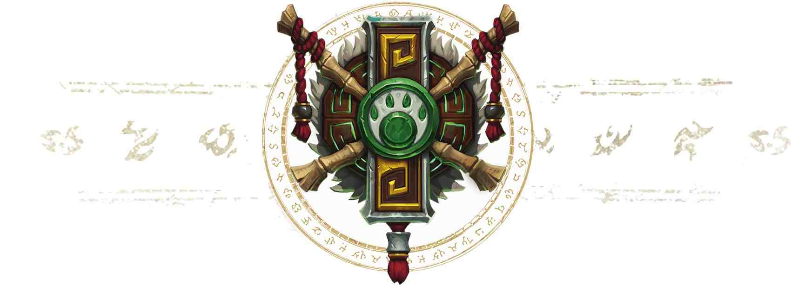

数千年前，当熊猫人沦为魔古族的奴隶时，只有其中的武僧始终怀抱希望。尽管魔古统治者禁止其奴仆持有武器，但是熊猫人武僧开创出了通过驾驭并集中自身内在灵力的徒手格斗技巧。最终，武僧及其门徒奋起反抗，推翻了魔古族的残暴统治，摆脱了压迫的枷锁。
武僧是徒手格斗的宗师，以其凌厉的拳法和踢技闻名，但他们的战斗方式不止于此。一些武僧乐于以醉醺醺的姿态化解敌人的连番猛攻，让伙伴同时发起进攻；而另一些武僧能够调用潘达利亚奇雾的治愈之力，令伤病者恢复健康。
武僧在生活和战斗中追求精神平衡，因此若无正当理由，他们绝不轻易挑起争端。他们从内心的祥和中汲取力量，并将之通过精妙的格斗技巧或是治愈生命的能力展现。最令人称奇的是，一些武僧擅长酿造充满力量的酒饮，并在战斗中饮用。